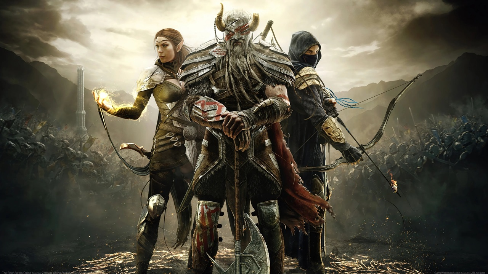
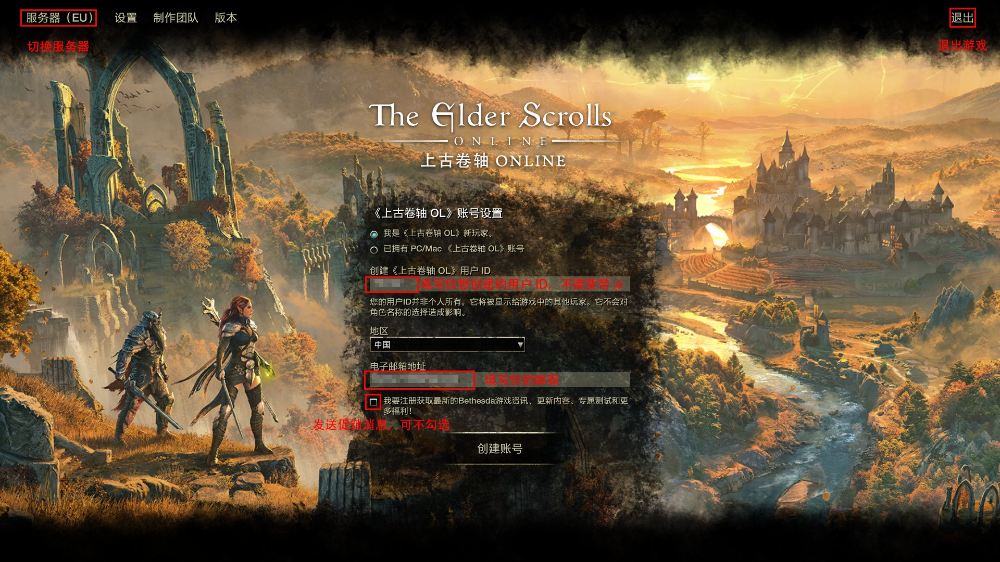

ESO新手指南
1.写在前面
玩了这么久ESO，也算是有了一些自己的心得体会。早在U42期间，糯竹就曾写下一篇《一个老萌新的ESO入坑教程》，但碍于当时才疏学浅，对游戏的理解略显肤浅，教程中存在一些表达不严谨的地方，甚至是明显的纰漏，很容易对新人产生误导，导致效果不尽如人意。因此，糯竹决定重新写一篇兼具严谨性与可读性的新手指南，以更好地帮助新人入坑，也就有了这一篇新手指南。
不得不说，ESO这个游戏的引导是非常糟糕的，很多新人朋友在游玩的过程中经常会感到很迷茫，不知道自己应该做什么；或者是遇到了各种问题，不知道该如何解决。本指南旨在为新人朋友们介绍游戏玩法，提供游戏技巧，拓宽游戏思路，降低大家走弯路、踩坑的概率，帮助大家都能找到适合自己的游戏玩法。
游戏机制千头万绪，欲理还乱，尽管糯竹殚精竭虑，但整篇指南仍然结构混乱，其中的疏漏与错误更是恒河沙数，俯拾皆是。此中种种不足，还望读者海涵。
1.1 说明
本指南基于U45补丁（版本10.3.5）编写，其中的数据来源，如无特殊说明，均为糯竹个人测试总结。随着新版本发布，部分资讯可能与游戏提供的内容不一致，请以实际游戏版本为准。
糯竹仅对PVE内容较为熟悉，本指南将以PVE视角切入，也主要以PVE为主。如需了解更多其他内容（如PVP），请向专业人士咨询。
1.2 如何使用本指南？
你需要拥有：
①良好的视力与理解能力
②一定的计算机网络基础
③必要的信息检索能力
下面是文本处理方式：
重要内容会加粗显示
斜体表示引用的言论，如：人用三年的时间学会说话，却要用一辈子的学会闭嘴，想想真是悲哀。——Rainmu
“*”表示一些拓展内容，或是糯竹个人主观感受。如果你只是轻度游玩，可以不必理会
“[]”中的内容是支撑正文观点的资料
请善用搜索功能（Ctrl+F）来获取你想了解的内容！
此外，糯竹还会给一些游戏中的内容添加说明，只需要点击就能看到其效果（尚在建设中）。
1.3 劝退
也许你已经摩拳擦掌，准备购买游戏大干一场，不过且慢！请你先好好考虑一下，你要入ESO这个坑吗？
不知道你是如何听说ESO的，又是抱着怎样的期待准备入坑的。不过我需要提前给你打一个预防针：“期待是痛苦的根源”。也许，ESO并不像其他人鼓吹的那么美好，相反，我安利过好几个朋友入坑，但他们最后都没有坚持下来；我带过的新人也挺多的，但好友列表里总是只有那么几个熟悉的名字还活跃着……
也许你入坑之后会觉得ESO实在与你调性不和，这自然是无法解决的；但是如果你是因为游戏中有种种问题无法解决，或是觉得“游戏里简直无事可做”而退坑，那我肯定会感到非常惋惜。这也是我写新手指南的初衷：帮助新手解决问题，介绍游戏玩法，希望大家都能在ESO中找到乐趣。
有这些阻碍是客观存在的：①价格过高，一年的会员费用加上加速器钱不算低；②服务器在国外，延迟较高，网络环境不好，掉线时有发生； ③官方一系列离谱操作； ④汉化质量不高。但我更希望，你也可以在ESO中找到自己想要的、属于自己的快乐。也许是一段真挚的友情，也许是一次次突破自我的喜悦，亦或是单纯的去发现，去探索……
老实说，我并不觉得现在是个适合新人入坑的时候。自从黑木和高岛章节的巅峰之后，ZOS骚操作不断，游戏日活也是一路下滑，游戏的顽疾不改的同时，各种问题也愈演愈烈。不过，如果你仍然想入坑，我还是会笑着迎接你：“欢迎来到泰姆瑞尔，无魂者。”
2.游戏入坑
2.1 游戏基础信息
《上古卷轴OL》(Elder Scrolls Online)发布于2014年4月4日，由Zenimax Online Studio开发(简称为ZOS)， Bethesda发行，是一款基于《上古卷轴》系列（The Elder Scrolls Series）世界观（圈内用Lore指代）的MMORPG。
由于“上古卷轴”被称为“老滚”（老头滚动条），所以开玩笑的时候会将其称为“老头在线滚动”。而官方和一般交流会称其缩写ESO。
ESO是跨平台的，在PC、Mac、Play Station和Xbox平台均有提供。
2.2 配置需求
以下是来自Steam的针对PC配置需要的有关信息：
最低配置：
| 需要64位处理器和操作系统 | |
|---|---|
| 操作系统 | Windows 10 64-bit |
| 处理器 | Intel® Core™ i5 2300 or AMD FX4350 |
| 内存 | 4 GB RAM |
| 显卡 | Direct X 11.0 compliant video card with 1GB RAM (NVIDIA® GeForce® 560 or AMD Radeon™ 6870) |
| DirectX 版本 | 11 |
| 网络 | 宽带互联网连接 |
| 存储空间 | 需要 150 GB 可用空间 |
| 声卡 | DirectX compatible sound card |
推荐配置：
| 需要64位处理器和操作系统 | |
|---|---|
| 操作系统 | Windows 10 64-bit |
| 处理器 | Intel® Core™ i5 2300 or AMD FX4350 |
| 内存 | 8 GB RAM |
| 显卡 | Direct X 11.0 compliant video card with 4GB of RAM (NVIDIA® GeForce® GTX 970 or AMD Radeon™ RX 570) or higher |
| DirectX 版本 | 11 |
| 网络 | 宽带互联网连接 |
| 存储空间 | 需要 150 GB 可用空间 |
| 声卡 | DirectX compatible sound card |
这里给出官方配置检查器：下载，可以用作参考。
*这其实是很早的配置要求了，现在ESO的配置要求会比Steam上显示的配置更高。糯竹个人经验，ESO与《上古卷轴：天际特别版》的配置要求差不多，如果你的电脑可以带得动《上古卷轴：天际特别版》，那么运行ESO应该不会有太大的问题。
2.3 游戏购买
这里给出官网购买链接：ESO官网.
这里放一个Steam版的传送门：Steam.一般推荐PC玩家通过Steam购买，具体原因会在后面解释。
我应该购买哪个版本？
以在Steam上购买为例，主要有3个购买选项：
《上古卷轴OL：标准版》:包含了本体游戏和免费的晨风DLC。
The Elder Scrolls Online Upgrade: Gold Road:仅包含黄金大道DLC，需要本体游戏才能游玩。
The Elder Scrolls Online Collection: Gold Road:此版本包含了本体游戏以及所有发布的大型DLC。
如果你只是想轻度体验ESO，一个标准版足矣；但如果你想长期游玩，强烈推荐购买 The Elder Scrolls Online Collection: Gold Road 合集包（也被称为“大包”）。而 The Elder Scrolls Online Upgrade: Gold Road 仅包含黄金大道而不包含以前发布的大型DLC，只适合已经购买了死灵之地大包的玩家购买。
ESO的新职业是包含在DLC中的，例如北艾斯维尔DLC包含了死灵法师职业，死灵之地DLC包含了奥术师职业，所以如果你没有购买大包，就无法使用新职业（即使你有会员也一样），但可以在游戏内通过王冠购买新职业（不推荐）。
*本指南将在Steam中购买的大型章节称为“DLC”，在游戏里使用王冠购买的小型章节和地下城章节统称为“章节”。
*ZOS目前已经宣布，在未来将采用“赛季制”更新，具体情况尚不清楚，但可能会对目前的购买方式产生影响。
2.4 王冠与会员权益
王冠是游戏内购货币，用于在王冠商店购物。
你可以在Steam中购买王冠。直购王冠价格颇高，使得玩家怨声载道。好在，王冠并不是一直这么贵，每年王冠都会打折出售，可以趁打折的时候囤一些。
除了直接购买王冠，ESO Plus 会员的权益也能让你获得低价王冠。
也许你觉得Steam直充王冠太贵，想试试某宝上的低价王冠（或者类似平台上的低价金币、低价会员等），但请注意，这些东西来源不明，可能导致封号风险，请谨慎考虑！不建议通过任何非官方途径购买王冠等货币！
如果你想长期游玩ESO，会员是必不可少的。它包含以下权益：
·免费使用除最新章节外的DLC（不含DLC职业和帝国人种族）；
·每月赠送1650王冠（开通后一次性到账）；
·商店部分商品优惠；
·制作包裹无限储存制作材料（重要！）；
·双倍银行空间；
·获得经验、金币、制作灵感、联盟点数（AP）和档案塔财富的速度增加10%；
·特质研究时间缩短10%；
·住宅可放置的装饰品和收藏品数量翻倍；
·双倍蜕变水晶上限（即上限从500蜕变水晶提升到1000蜕变水晶）；
·允许为时装染色。
注意：会员和在Steam中购买的DLC是可以跨服务器使用的，但王冠和王冠购买的物品无法跨服务器使用！举个例子，你有5000王冠，在PC欧服使用1500王冠购买了1个角色槽，余额3500王冠；但当你来到PC美服时，你的王冠余额也是3500王冠，而且你也不会收到这个角色槽。这也是糯竹更推荐买大包解锁新职业的原因，因为可以跨服务器使用。
此外，ESO Plus应在创立角色后再开通，否则赠送的王冠可能不到账，需要找客服补发。
Epic平台会员需要在官网购买，价格15美元/月，比Steam平台高，因此建议PC玩家在Steam平台游玩。
2.5 创建账号
由于在官网创建账号需要通过人机验证，国内网络环境很容易导致加载失败，无法创建，建议在游戏内创建，无需人机验证步骤。
如图，你需要输入电子邮箱和你想创建的ESO ID。ESO ID是唯一且跨服务器的，你可以通过ID识别其他玩家。不建议使用手机号或QQ号作为你的ID！
*一般来说，ID以@开头，但在公会历史记录中，@不会显示。
创建账号后，请查看邮箱，并根据指引在三天内完成账号验证。
登录时有时需要八位访问验证码。如果你的邮箱无法收到访问验证码，请检查是否通过Steam启动游戏（安装后的游戏貌似不是通过Steam启动的，需要关闭后手动从Steam中打开）。
{kind=link}

2.6 加速器选择
ESO的服务器都不在国内，例如PC欧服的服务器在德国法兰克福。由于物理距离限制，不挂加速器很难获得良好的游戏体验：不仅延迟更高，而且更容易遇到卡顿掉线等情况。因此，还是推荐使用加速器。
主流的加速器都能加速ESO，但地区、运营商、所选节点等差异都可能影响加速效果。你可以咨询其他玩家以帮助你做出选择。
2.7 服务器选择
ESO各平台都分了两个服务器，以PC平台为例，有PC欧服（EU）和PC美服（NA）两个服务器。
PC欧服总人数更多，但由于跨的时区多，玩家在线时间较为分散。欧服主要使用英语，但也可以见到俄语、法语、德语、西班牙语等语种。欧服的物价相对较低，而由于服务器离国内更近，延迟也会稍低（越往西北延迟越低）。欧服的国人较少，但也有好几个大型公会，不用担心找不到组织。
PC美服总人数少，但由于玩家群体以美国人为主，玩家在线时间更集中，也基本上都说英语。由于服务器在美国，横跨太平洋，延迟会略高。美服的国人较多，看起来更热闹一些。
以上内容仅供参考，不构成选择建议。
3.ESO初试
3.1 创建角色
3.1.1 PVE基础知识补充
对于PVE而言，职业与你的角色位置*不挂钩。PVE中有3种位置：输出、坦克和奶妈。
*这里的角色玩法英文为Role，指的是你在队伍中的位置或者职责，但ZOS蛋疼地直译为与创建的角色（Character）相同的“角色”，没有做出区分。本文中“Role”这个词会用用糯竹自己翻译的“位置”代替。
输出（Damage Dealer）：对怪物全力输出。
坦克（Tank）：嘲讽怪物，提供增减益，营造良好的输出环境。
奶妈（Healer）：治疗队友，提供增减益，便利队友输出。
在后面会有更详细的解析。
3.1.2 创建角色
创建角色有这几个步骤：
①取名。
这里的名字是该角色的名字，只支持英语不支持中文，限制很多，取名界面有详细要求。
②选种族和联盟。
一共有十个种族，其中只有帝国人需要氪金，可自选联盟。其他种族绑定联盟。
联盟由种族决定，对PVP阵营有影响，但对PVE没有。如果你不玩PVP，联盟对你没有影响。
一共有三个联盟：
黑檀心公约联盟 (EP)：标识为红龙，包含诺德人、暗精灵和亚龙人(准确的说法是阿尔贡人)。
匕落同盟 (DC)：标识为蓝狮子，包含布莱顿人、红卫人和兽人。
先祖神洲 (AD)：标识为黄凤凰，包含高精灵、木精灵和虎人(准确的说法是卡吉特人)。
你可以在商店购买“任意种族，任意联盟”包任意选择联盟（被称为“叛国包”）
种族被动对你的强弱有一定的影响，但非常有限，如果你并不是极端追求数值的玩家，建议按照自己的XP选。
对于PVE，这样选择可能更优：
| 法系输出 | 高精灵 |
| 耐系输出 | 兽人 |
| 可法可耐 | 暗精灵、虎人（暗精灵比较万金油） |
| 坦克 | 诺德人、帝国人、亚龙人 |
| 奶妈 | 亚龙人、布莱顿人、高精灵 |
其中，红卫人和木精灵的被动相对劣势；但实际上，种族被动带来的差异并不大，一般不超过5%，你完全可以选择自己喜欢的种族。
③选择职业。
选择什么职业可以说是最困扰新人的一个问题了。但实际上，这并不是一个大问题：你可以创建多个角色，每个角色都可以选不同的种族与职业，通过这种方式可以体验全部职业的内容。
对于PVE而言，职业与你的角色位置不挂钩。任何职业都能适应这三个位置，但不同职业之间的适应情况有所不同。下面是各职业分析与位置推荐。
| 龙骑士 | 输出方面，龙骑士有良好的AOE能力，输出循环简单，上手难度较低；坦克生存能力强，对团队增益也十分优秀，但不适合当奶妈。 |
| 圣殿骑士 | 输出方面，拥有全游戏最强斩杀技能，单体伤害优秀的同时也有较强的AOE能力，上手难度较低；但由于能给团队提供的增益有限，坦克奶妈方面不太理想。 |
| 术士 | 输出方面，术士可以使用橡木之环玩重击法，上手难度低；坦克奶妈增益良好，也均较理想。 |
| 夜刃 | 输出方面，夜刃单体能力较强，但AOE能力稍逊，上手难度略高；奶妈方面，夜刃大招流转快且增益优秀，较为理想，坦克方面也有一定可取之处。 |
| 守望者 | 输出方面，守望者循环略微复杂，上手难度略高；奶妈上手简单，且拥有其他职业无法提供的次级坚毅增益，增益优秀；而坦克方面，守望者回血多，但绝对生存能力与龙骑术士有差距，且团队增益有限，故出场率低。 |
| 死灵法师 | 输出方面，死灵法师循环上手较难，但上限较高；坦克增益优秀，奶妈无明显弱势的同时也缺乏明显的强项，出场率不高。 |
| 奥术师 | 输出方面，奥术师循环简单，上手难度低，且拥有不俗的直线AOE能力；坦克资源良好，生存能力强；奶妈较为简单，同时又能提供良好的增益。 |
以上评价由糯竹根据自身游戏体验得出，仅供参考。
请注意，该评价不代表职业的实际强弱，个人对游戏的理解和操作起主导作用，你不需要按照“谁最强”的思路选择，而应该按照自己的喜好选择。
*搞不好下个版本调整职业平衡，就三十年河东三十年河西了，你说对吧ZOS。
④捏脸
捏脸是老滚系列的传统艺能了，但需要注意的是，捏脸界面在冷港的哀嚎监狱，光线与大世界的不一样，脸部效果会有区别。
3.2 调整游戏设置
只有当你创建角色进入游戏后，才会显示所有游戏设置。推荐你更该以下选项，以获得更好的游戏体验。
设置-视频-显示：显示模式->窗口化（铺面全屏）：该选项可以防止输入中文时留下无法清除的候选词框。
设置-音频-字幕：NPC字幕->开：这一项默认是关闭的，开启后可以让你清楚NPC讲了些啥。
设置-游戏设置-战斗：避免攻击无辜者->开：防止你一不小心打到NPC导致被通缉。
设置-游戏设置-战斗：快速施放地面技能->开：可以更快捷方便地施放地面技能。
设置-游戏设置-手柄：手柄模式->自动：默认为关，如不更改则无法使用手柄游玩。
设置-界面-性能：帧率/延迟->开：建议开启以查看实时帧率与延迟，可用于辅助判断当前游戏状况。
设置-社交-聊天设置：脏话过滤器->关：建议关闭，否则聊天里全是***。
设置-社交-通知：排行榜通知->关：建议关闭，否则会发送各种各样的通知，影响沉浸感。
此外，还有一些可选的设置，例如敌人AOE效果颜色、是否要双击闪避、增益与属性条效果，可根据个人喜好调整。
*对于渣机，强烈推荐开启FSR模式。关于什么是FSR，请参阅AMD官网。
3.3 新手教程
你来到了冷港的哀嚎监狱，这是魔神（正确翻译是“迪德拉王子”）莫拉格·巴尔的领域，你需要逃出这个位面。
创建时间：2025/2/5
上次修订时间：2025/3/20
本文章授权给@EchoWFlechazo和@hua_su，允许其使用本文章的部分或全部内容。